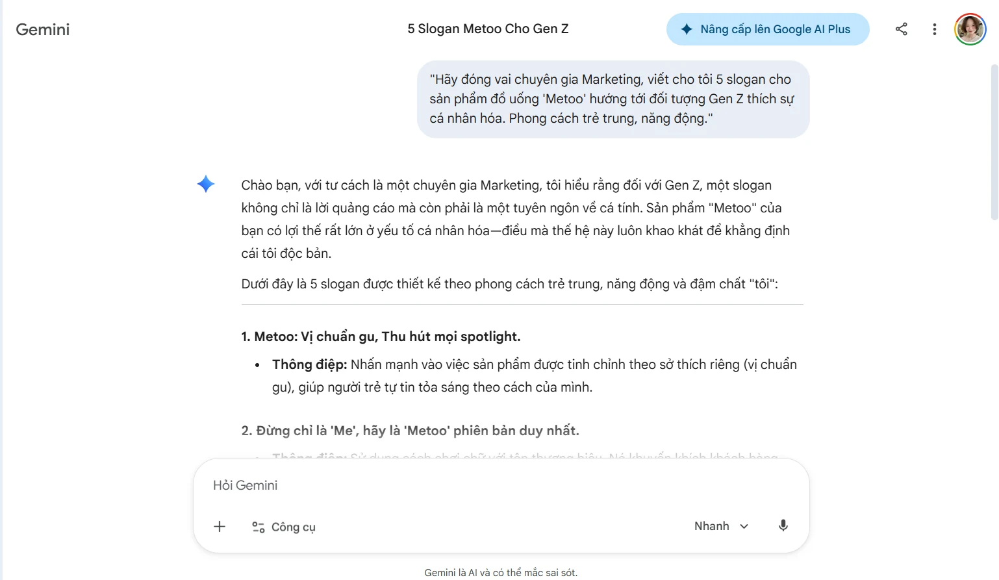

BÁO CÁO CÁ NHÂN: ỨNG DỤNG AI TẠO SINH TRONG SÁNG TẠO NỘI DUNG SỐ
Dự án: Xây dựng bộ ấn phẩm Marketing cho sản phẩm "Metoo" (Sản phẩm thực tế bạn đã làm).
Họ và tên: Đinh Lê Thảo Nguyên
MSV: 25051013
I. GIỚI THIỆU DỰ ÁN VÀ LÝ DO CHỌN CÔNG CỤ
Dự án này tập trung vào việc tạo ra nội dung đa phương tiện cho sản phẩm đồ uống/thực phẩm "Metoo". Mục tiêu là sử dụng AI để tối ưu hóa quy trình từ khâu lên ý tưởng đến thiết kế hình ảnh cuối cùng.
3 công cụ AI được sử dụng:
Google Gemini: Hỗ trợ tư vấn chiến lược và viết kịch bản nội dung (AI Văn bản).
Microsoft Designer/DALL-E: Tạo hình ảnh sản phẩm và bối cảnh (AI Hình ảnh).
Canva Magic Design: Hỗ trợ bố cục và đồ họa (AI Thiết kế).
II. CHI TIẾT QUÁ TRÌNH SỬ DỤNG AI VÀ CÁC PROMPT
1. Sử dụng Google Gemini (Sáng tạo nội dung)
Mục tiêu: Xây dựng slogan và kịch bản cho bài viết quảng cáo.
Prompt đã dùng: "Hãy đóng vai chuyên gia Marketing, viết cho tôi 5 slogan cho sản phẩm đồ uống 'Metoo' hướng tới đối tượng Gen Z thích sự cá nhân hóa. Phong cách trẻ trung, năng động."
Kết quả: Nhận được các slogan như: "Metoo - Vị riêng của bạn", "Đậm chất tôi cùng Metoo".
Chỉnh sửa cá nhân: Tôi chọn slogan "Vị riêng của bạn" nhưng sửa lại thành "Metoo: Khẳng định vị riêng" để nghe chuyên nghiệp hơn.

2. Sử dụng Microsoft Designer (Tạo hình ảnh bối cảnh)
Mục tiêu: Tạo hình ảnh một chiếc cốc phong cách Polaroid đặt cạnh cửa sổ có rèm trắng (Sở thích của bạn).
Prompt đã dùng: "A Polaroid style photo of a drink bottle labeled 'Metoo', film grain, high contrast flash, minimalist white curtain background, soft aesthetic."
Kết quả: Ảnh có ánh sáng đẹp nhưng phần chữ "Metoo" trên nhãn chai đôi khi bị lỗi font.
Chỉnh sửa cá nhân: Tôi dùng công cụ xóa vật thể để xóa chữ lỗi của AI và chèn lại logo chuẩn của sản phẩm.

III. SO SÁNH VÀ PHÂN TÍCH HIỆU QUẢ CÁC CÔNG CỤ
Tiêu chí |
Google Gemini |
Microsoft Designer |
Canva AI |
Điểm mạnh |
Khả năng ngôn ngữ tiếng Việt tốt, hiểu ngữ cảnh sâu. |
Tạo hình ảnh sáng tạo, ánh sáng và màu sắc phim rất tốt. |
Hỗ trợ bố cục (layout) cực nhanh, thư viện đồ họa lớn. |
Hạn chế |
Đôi khi văn phong còn hơi "máy móc", cần chỉnh sửa lại. |
Khó xử lý đúng các chữ viết (text) trên hình ảnh. |
Các thiết kế tự động đôi khi hơi đại trà, thiếu đột phá. |
Nhận định chuyên sâu: AI đã thay đổi hoàn toàn quy trình của tôi. Thay vì tốn 2 ngày để tìm ý tưởng và thuê thợ chụp ảnh, tôi chỉ mất 2 tiếng để có bộ ảnh bối cảnh ưng ý. Tuy nhiên, AI chỉ đóng vai trò "người thực thi", còn "người định hướng" (về phong cách Polaroid, về cảm xúc) vẫn phải là con người.
IV. VAI TRÒ CỦA AI VÀ CÁC VẤN ĐỀ ĐẠO ĐỨC
1. Vai trò của AI trong quy trình sáng tạo
AI không thay thế sự sáng tạo của tôi mà nó giải phóng tôi khỏi các tác vụ lặp lại. Nó giúp tôi hiện thực hóa ý tưởng về "thẩm mỹ Polaroid" một cách nhanh chóng mà không cần máy ảnh cơ đắt tiền.
2. Các vấn đề đạo đức cần cân nhắc
Bản quyền hình ảnh: Các hình ảnh do AI tạo ra lấy dữ liệu từ đâu? Tôi cần đảm bảo không vi phạm bản quyền của các nhiếp ảnh gia khác.
Tính xác thực: Việc dùng AI tạo ra hình ảnh sản phẩm quá đẹp so với thực tế có thể gây hiểu lầm cho người tiêu dùng. Tôi luôn phải cân nhắc mức độ chỉnh sửa để giữ lại tính trung thực của sản phẩm "Metoo".
V. KẾT LUẬN VÀ SẢN PHẨM CUỐI CÙNG
Dự án hoàn thiện với sự kết hợp: 40% từ AI và 60% đóng góp sáng tạo cá nhân (chỉnh sửa nội dung, thiết kế lại logo, sắp xếp bố cục). Đây là mức độ kết hợp hài hòa để đảm bảo sản phẩm vừa có tốc độ của máy móc, vừa có linh hồn của con người.